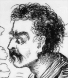
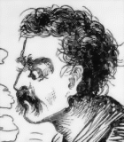

|
|
After Clemens came east, Mark Twain's features quickly became as well-known as his name, although A Tramp Abroad (1880) was the first of his books to include a frontispiece portrait of the author. The American Publishing Company asked for a portrait to use at the front of Innocents Abroad, but he refused. To Mary Fairbanks he gave this explanation: "I hate the effrontery of shoving pictures of nobodies under people's noses in that way, after the fashion of quacks and negro minstrels." The picture at left is from the Galaxy Magazine, which hired MT to edit a humorous department called "Memoranda" in 1870. When it published this portrait in its August issue, it gave its readers an early, atypical look at what the person called "Mark Twain" really looked like. On the other hand, "Mark Twain" appears repeatedly in many of his books, but as the excitable, naive, hapless character he plays in the narratives. If the typical 19th-century frontispiece depicted "the author" as someone to be admired, the cartoonish figure of "Mark Twain" who is displayed inside MT's texts was someone readers could comfortably look down on in amusement. |
|
In this section are images of the various ways "Mark Twain" was depicted in his books, from 1869 to 1899. The first two are from Innocents Abroad, and depict "MT" looking at the can-can in Paris, and weeping at the Tomb of Adam in the Holy Land. (For other images from this book, see the INNOCENTS SECTION of the archive.)   MT's next book, Roughing It, was another first-person travel narrative, this time dealing with his misadventures as a newcomer to the American West rather than the Old World. The illustration below left is the book's equivalent to a frontispiece: in it "Mark Twain" appears in the role of miner enjoying the illusion that he's finally struck it rich. The other picture shows him trying to drink the wine of the country. (The ROUGHING IT SECTION of the archive contains many additional illustrations, all of which follow this pattern.)   Sketches, Old and New (1875) was a collection of short pieces, mostly previously published in magazines. Because it was being sold by subscription, it was lavishly illustrated. Among the many pictures of "Mark Twain" in the book are two that depict him in roles closely associated with MT the Author: the first shows him lecturing in Newark, the second, as a newspaper editor. Both, however, maintain the pattern of depicting his incompetencies, not his achievements. The joke is on him as a humorous lecturer trying to make a deaf man laugh, and again as a journalist trying to make sense of a contribution. By the time A Tramp Abroad appeared in 1880, MT was willing to provide a more traditional frontispiece portrait (below left). On the other hand, within the narrative and its accompanying illustrations, he remained the comic misadventurer. In the picture below right, he's trying to navigate a raft on a river.  Life on the Mississippi (1883) is part travel narrative, but also part autobiographical memoir. It began with the series of pieces MT wrote for the Atlantic about Sam Clemens' experiences as an apprentice steamboat pilot in the 1850s -- in other words, in the days when "Mark Twain" only referred to the depth of the water, not to a character Sam Clemens had created. As you can see from the illustrations, however, the figure of "Mark Twain" as comic naif is superimposed on Sam Clemens' experiences, so that the apprentice pilot looks as much out of his depth as the tenderfoot out west. Note how young this figure is, though in fact Clemens was in his early twenties when Bixby "learned him" the river.  The later chapters of Life on the Mississippi include illustrations of the adult MT making a pilgrimage back to the River in 1882 -- and one picture that suggests other ways in which the image of "Mark Twain" was shaped and reshaped. In the book's very first edition, at the end of a discussion of embalming and cremation in Chapter 43, the illustrator put a visual punchline to MT's joke by depicting him amid the flames of hell. According to Merle Johnson, when Livy Clemens saw this picture, she was so upset that subsequent printings of the book "omitted" the illustration "at the request of the author's wife."* Below is page 441 from two different 1883 printings of the book.  MT actually held up the publication of Huck Finn (1885) in order to have tipped into the front of each copy an engraving of the bust of "Mark Twain" done by his protege, Karl Gerhardt. As a piece of sculpture solemnly presented, it suggests a great man, not a comic anti-hero. But the depictions of "Mark Twain" in MT's Library of Humor, published in 1888 and illustrated by E.W. Kemble (who did the drawings for Huck Finn), continue to show him in caricature, as in the picture below right, drawn to illustrate the often-reprinted anecdote of the Mexican Plug from Roughing It.  MT published one last travel book in 1897: Following the Equator. By then he was over sixty, and had been through the traumas of his well-publicized bankruptcy and the death of his oldest daughter, Susy. By 1897 photographs had taken the place of engravings for frontispieces, as shown below left. There were several photographs inside the text as well, but most of the pictures were still drawings, and as you can see from the drawing below right, the figure of "Mark Twain" was still available for comic purposes -- not only the reader, but "even the seagulls" can look down on and laugh at him.  On the other hand, by this point in his career MT had also become perhaps the brightest star in the heaven of America's growing celebrity culture, and as such was looked up to with esteem as well as affection. In 1899 the American Publishing Company brought out the multi-volume limited "�dition de Luxe" of his Writings. The titlepage for the edition was "Designed by Tiffany & Co.," and featured not only scenes from his works, but a reminder that, if he was born in a cabin, he now lived in a mansion (below right). Each volume's frontispiece similarly posed him as a distinguished man of letters: below left is the 1891 portrait that was used in Vol. 14, Pudd'nhead Wilson.  |